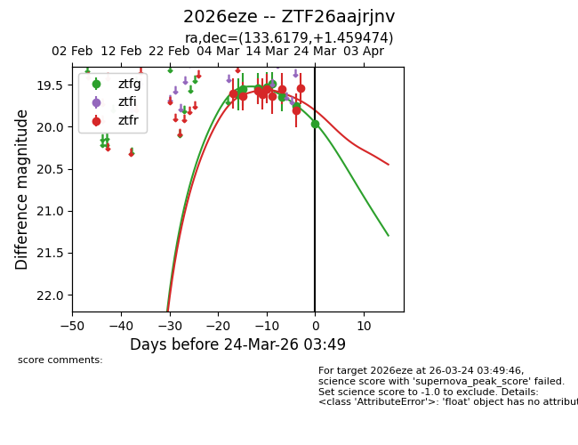
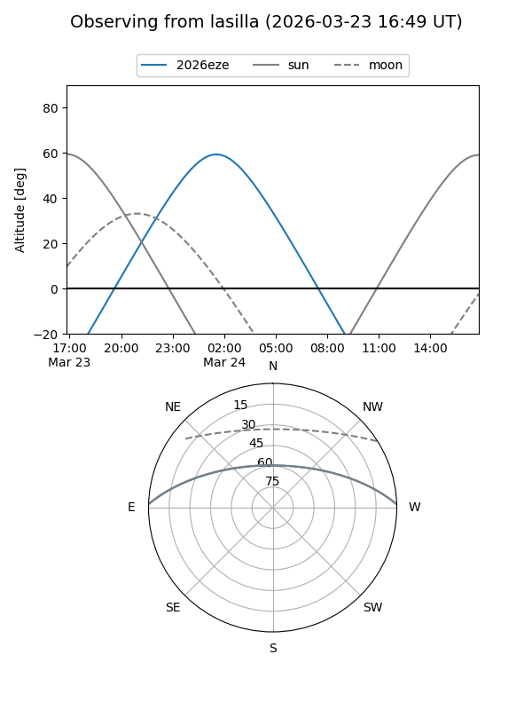
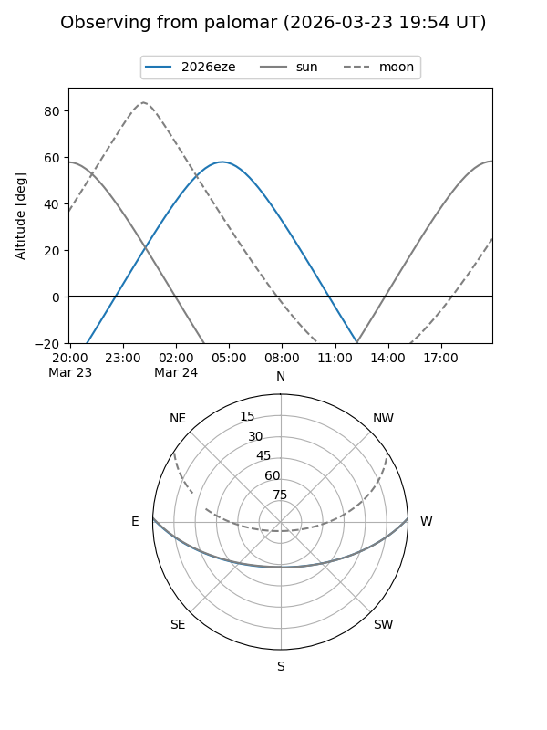
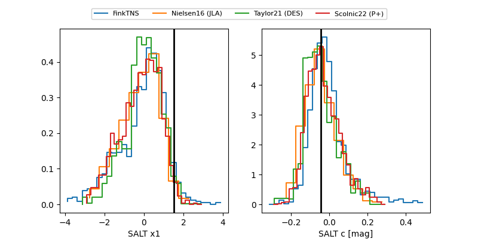

2026eze
Target 2026eze at 2026-03-24 03:52
Aliases and brokers:
FINK: link
Lasair: link
ALeRCE: link
TNS: link
YSE: link
alt names
ZTF26aajrjnv (ztf,fink_ztf)
2026eze (tns,yse)
Coordinates:
equatorial (ra, dec) = 133.6179,+1.45947
equatorial (HMS+DMS) = 08:54:28.29,+01:27:34.11
galactic (l, b) = (226.6974,+27.81530)
Flags:
Photometry:
last ztfg=19.97, ztfr=19.54
8 ztfg, 9 ztfr detections
Lightcurve

Visibility


Additional plots
